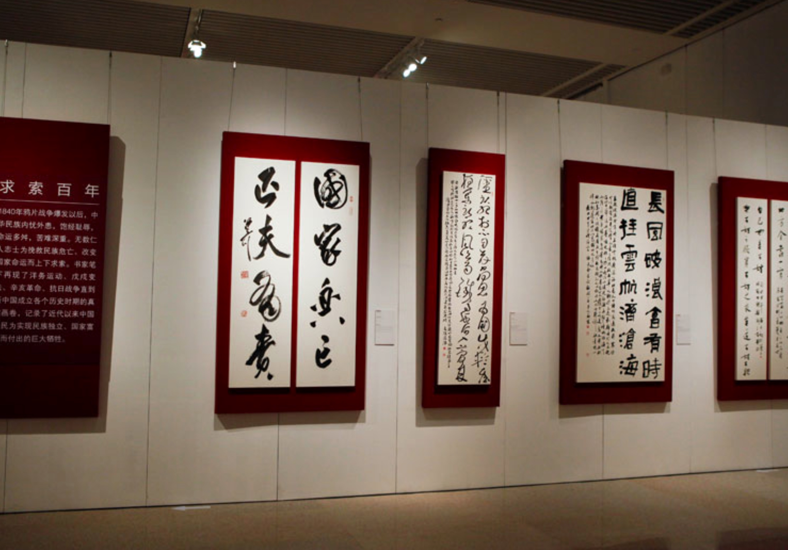

【展讯】“不忘初心，继续前进“——上海中国书法院院展开幕

梅季才走，骄阳重回。上海中国书法院又迎来了她的新展。
上海市委书记李强同志指出：“上海要打响“上海文化”品牌，传播红色文化、海派文化、江南文化。上海中国书法院自新址落成以来，秉承弘扬中华优秀传统文化的初衷，致力于书法艺术的发扬光大。本月九日，庆祝中国共产党成立九十七周年“不忘初心，继续前进”上海中国书法院院展正式开幕。
参加上海书法院院展开幕式的有：上海市文联副主席、上海市书法家协会主席周志高，闵行区政协副主席王一力，闵行区新虹街道党工委副书记龚悦琦，闵行区新虹街道办事处副主任盛才国，上海市书法家协会副主席丁申阳，上海市书协副秘书长章宏伟，上海中国书法院执行副院长张耀伟、副院长田金生、孙慰祖、王琪森以及社会各界人士。
开幕当天，社会各界人士纷纷顶着烈日，饱含热情，驻足观摩。尤其是上海著名书法家、年届104周岁的顾振乐先生的到来，引起了极大的轰动，人们纷纷要求与顾老合影，并诚祝顾老健康长寿。来自乌克兰的上海外国语大学的留学生安好的书法作品，也受到大家的普遍好评。
参观者认为，本次上海中国书法院院展集合了上海书法界的精品佳作，艺术水准和专业水平不同一般，是沪上难得一见的专业展会。
上海中国书法院院长周志高表示，上海中国书法院要不断努力，䟗砺前行，创造上海书法文化新高地，努力为打造上海品牌文化作出新的贡献。